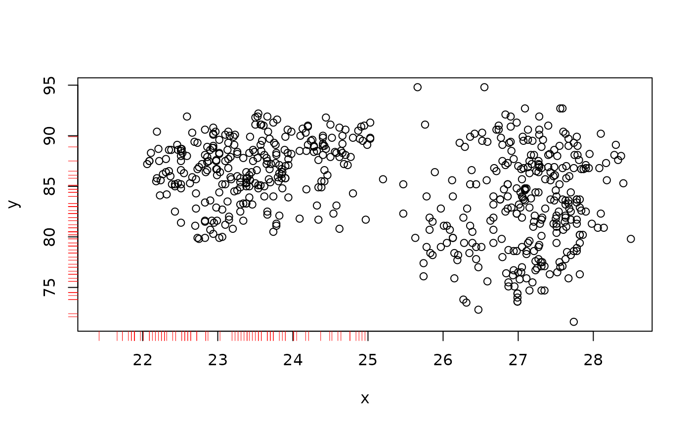
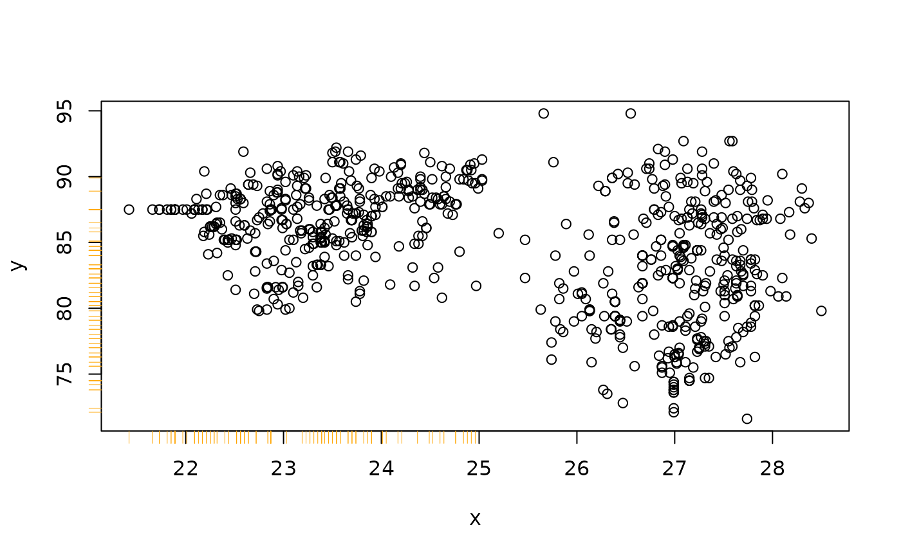

Add a rug representation of missing/imputed values in only one of the variables to scatterplots.
rugNA(
x,
y,
ticksize = NULL,
side = 1,
col = "red",
alpha = NULL,
miss = NULL,
lwd = 0.5,
...
)numeric vectors.
the length of the ticks. Positive lengths give inward ticks.
an integer giving the side of the plot to draw the rug representation.
the color to be used for the ticks.
the alpha value (between 0 and 1).
a data.frame or matrix with two columns and
logical values. If NULL, x and y are searched for
missing values, otherwise, the first column of miss is used to
determine the imputed values in x and the second one for the imputed
values in y.
the line width to be used for the ticks.
further arguments to be passed to graphics::Axis().
If side is 1 or 3, the rug representation consists of values
available in x but missing/imputed in y. Else if side
is 2 or 4, it consists of values available in y but missing/imputed
in x.
data(tao, package = "VIM")
## for missing values
x <- tao[, "Air.Temp"]
y <- tao[, "Humidity"]
plot(x, y)
rugNA(x, y, side = 1)
rugNA(x, y, side = 2)

## for imputed values
x_imp <- kNN(tao[, c("Air.Temp","Humidity")])
x <- x_imp[, "Air.Temp"]
y <- x_imp[, "Humidity"]
miss <- x_imp[, c("Air.Temp_imp","Humidity_imp")]
plot(x, y)
rugNA(x, y, side = 1, col = "orange", miss = miss)
rugNA(x, y, side = 2, col = "orange", miss = miss)
